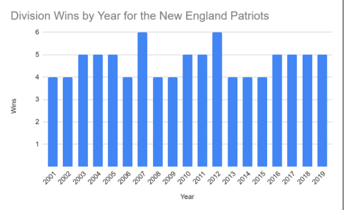
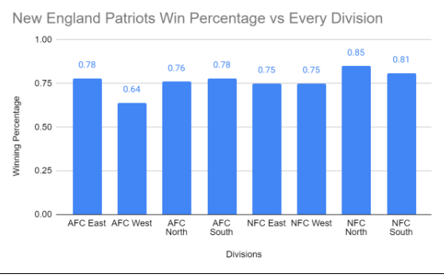
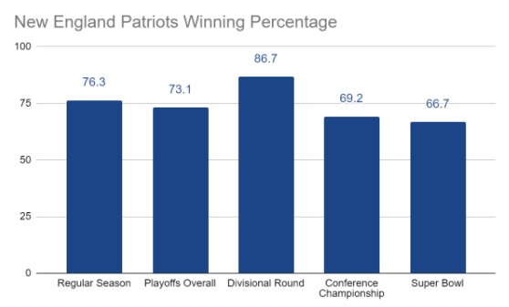
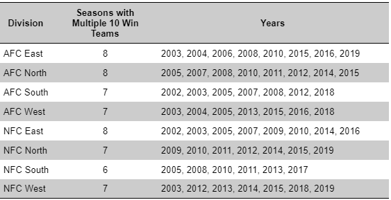

AFC Least or AFC Beast?
By Arnav Gupta | May 26, 2021

For the last two decades, the NFL has more-or-less been run by the New England Patriots. In the sporting league designed to create parity, the Patriots were able to consistently dominate to the tune of 17 division championships, 9 Super Bowl appearances, and 6 Super Bowl wins. Year in and year out, the Patriots were contending for Super Bowls, while the rest of the league tried to figure out how to keep up. What the Patriots had that everyone else lacked was the Best QB and Coach in NFL history, and this combination made them extremely tough to beat. However, many people claim that one of the biggest reasons for the Patriots’ success is that they played in a weak division and as a result got ‘six free wins’ every year which boosted their playoff seeding. Being a Patriots fan, this idea baffles me, since I can remember numerous times where the Patriots lost to their AFC East competition late in the season, directly harming their playoff position. The Patriots have only gone undefeated within their division twice from 2001-2019, which is the time where Tom Brady was the starter.
Going back to 2010, I count 6 times where a division foe directly affected the Patriots playoff seeding by beating them late in the season: 2010 Divisional Round: Jets defeat Patriots 28-21 2013 Week 15: Dolphins defeat Patriots 24-21, loss dropped Patriots to 2nd seed 2015 Week 16: Jets defeat Patriots in OT 20-26 2015 Week 17: Dolphins defeat Patriots 10-20, this loss and Jets loss above drop Patriots to 2nd seed. 2018 Week 14: Dolphins defeat Patriots 33-34 in Miami Miracle game, dropped Patriots to second seed. 2019 Week 17: Dolphins defeat Patriots 27-24, dropped Patriots to 3rd seed, losing playoff bye. It is true that the Patriots did own the AFC East, but they were always prone to drop one or two division games every season for the most part. Stemming from the claims of the “Easy AFC East” is the notion that had the Patriots been in a different division, they wouldn’t be as successful, but this doesn’t hold up when looking at the Patriots win percentage for every division from 2001 to 2019.
As shown above, the Patriots dominated every division, save for the AFC West which was skewed down by the Broncos who they struggled against going 9-9 in 18 matchups. In the regular season from 2001 - 2019, the Patriots had the highest winning percentage of .763 with the Steelers in a distant second at .648, so the Patriots win percentage in the AFC West is still on par with the second best teams overall percentage. The Patriots winning percentage in the playoffs further dispels the notion that they would less dominant in another division:
The Patriots playoff record is just slightly worse than their record in the regular season which makes sense since the competition in the playoffs is better than in the regular season. For context, the second best regular season team from 2001-2019, the Steelers had a .648 winning percentage, so the Patriots had a better record in the Super Bowl against a top-two team in the league than the second-place Steelers had in the regular season overall.
Next, I want to look at how many times there were serious challengers to the Patriots within the AFC East and compare that to other divisions. To do this, I counted how many times there were multiple 10 win teams in each division since a 10 win team is very likely to be a playoff team and having multiple playoff caliber teams in a division should indicate that the division was competitive. The timeframe is from 2002 to 2019 this time since the divisions were realigned after the 2001 season, but it’s worth noting that the Patriots had two other 10 win teams within their division in 2001 as well.
There hasn’t been much separation in this category but it does show that the AFC East has been on par with other divisions in creating playoff caliber teams to compete with the division winner.
The notion that the Patriots benefited greatly from being in the AFC East is just a myth. They did benefit a little bit, but not enough to say that their success would have changed drastically had they been in another division all these years. The division is better than people realize only because the records of the other three AFC East teams are skewed lower by having to play against a team like the Patriots a lot more than other teams. There were many years where the AFC East featured a playoff caliber squad that was overshadowed by the Patriots who were just better.
.gif)